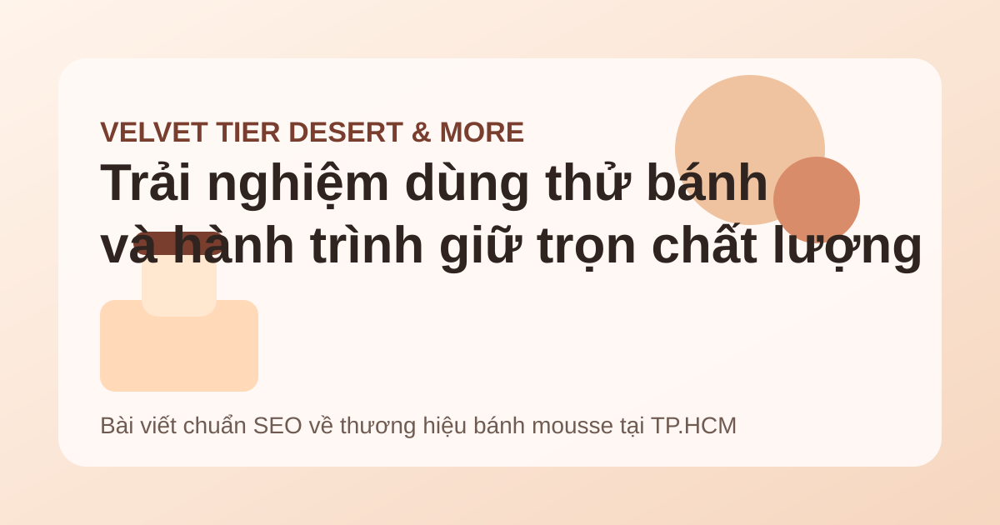
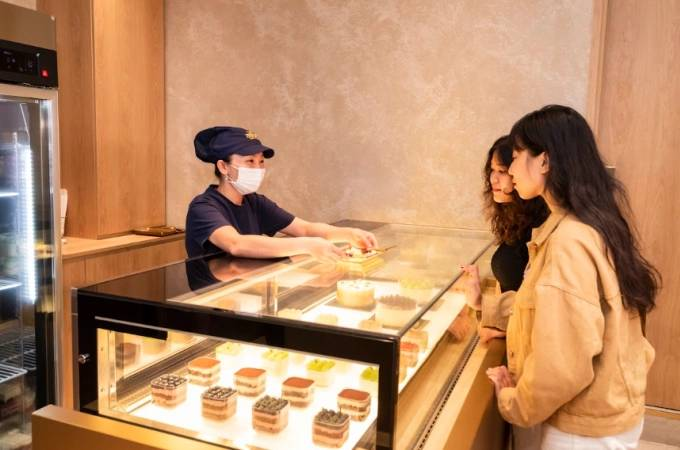

Velvet Tier cho khách dùng thử bánh: chiến lược nâng cao trải nghiệm khách hàng
Không chỉ nổi bật với các dòng bánh mousse sáng tạo, Velvet Tier còn ghi dấu bằng chính sách cho khách dùng thử sản phẩm, từ đó tăng niềm tin mua hàng và xây dựng trải nghiệm đáng nhớ cho thực khách.
Velvet Tier và định hướng lấy trải nghiệm khách hàng làm trung tâm
Ra mắt khách hàng từ năm 2017, Velvet Tier Desert & More, thường được biết đến với tên gọi Velvet Tier, khởi đầu là một tiệm bánh online tập trung vào dòng bánh mousse. Sau 5 năm phát triển, thương hiệu do anh Hoàng Vũ sáng lập đã mở thêm 2 cửa hàng tại quận 1 và quận Phú Nhuận, TP.HCM.
Điểm khác biệt của Velvet Tier không chỉ nằm ở việc liên tục làm mới hương vị theo mùa mà còn ở cách thương hiệu đầu tư vào trải nghiệm mua sắm. Một trong những chính sách đáng chú ý là cho khách hàng dùng thử bánh trước khi quyết định mua.

“Tôi vui khi khách hàng muốn thử vì điều đó cho thấy chiếc bánh đã tạo được sự tò mò ngay từ cái nhìn đầu tiên. Điều tôi kỳ vọng là họ có thêm trải nghiệm mới và thêm niềm tin vào quyết định mua hàng.”
Dù chính sách dùng thử khiến thương hiệu tốn thêm chi phí vận hành và nguồn lực, anh Hoàng Vũ vẫn xem đây là cách để tạo ấn tượng mạnh hơn với thực khách. Trong bối cảnh người tiêu dùng ngày càng quan tâm đến trải nghiệm thật, chiến lược này giúp Velvet Tier xây dựng sự khác biệt so với nhiều tiệm bánh truyền thống.
Chất lượng bánh mousse đến từ nguồn nguyên liệu trái cây tươi Việt Nam
Bên cạnh trải nghiệm khách hàng, chất lượng sản phẩm là ưu tiên hàng đầu của Velvet Tier. Thương hiệu sử dụng trái cây tươi thuần Việt làm nguyên liệu chủ đạo cho cả phần cốt bánh lẫn khâu trang trí. Đây là yếu tố giúp các sản phẩm giữ được độ tươi mới, tự nhiên và hài hòa về hương vị.
Để đảm bảo tiêu chuẩn đầu vào, anh Hoàng Vũ đã dành nhiều thời gian khảo sát các nông trại từ Bắc vào Nam. Quan điểm của anh rất rõ ràng: chỉ cần nguyên liệu ngon thì bánh sẽ ngon. Nhờ những chuyến đi thực tế này, Velvet Tier có cơ hội tiếp xúc trực tiếp với người nông dân và chọn được những nhà vườn phù hợp nhất với yêu cầu của thương hiệu.

- Chủ động tìm kiếm và chọn lọc nông sản Việt Nam đạt chuẩn.
- Có nguồn cung ổn định nhờ chính sách bao nguyên vườn với giá cao.
- Hiểu rõ mùa vụ để chọn đúng vùng nguyên liệu ngon theo từng thời điểm.
- Chuẩn hóa đầu vào theo tiêu chí riêng để giữ độ đồng đều cho sản phẩm.
Ban đầu, việc xây dựng chuỗi cung ứng nguyên liệu có thể là một quá trình nhiều thách thức. Tuy nhiên, đến hiện tại, đây lại trở thành lợi thế cạnh tranh của Velvet Tier. Nhờ hiểu sâu về vùng trồng và mùa vụ, thương hiệu có thể duy trì chất lượng ổn định cho từng loại bánh mousse theo mùa.
Menu sáng tạo, tự nhiên và ít ngọt giúp Velvet Tier tạo dấu ấn
Từ một thực đơn nhỏ chỉ gồm vài món đơn giản, Velvet Tier hiện đã phát triển danh mục lên khoảng 16 vị bánh mousse, cùng với một số dòng kem gelato và trà ủ lạnh. Dù số lượng sản phẩm không quá lớn, đội ngũ thương hiệu vẫn kiên định với định hướng đặt chất lượng lên trên mở rộng ồ ạt.
Một số sản phẩm signature của Velvet Tier có thể kể đến như mousse dưa lưới hay mousse bơ. Bên cạnh đó, thương hiệu cũng liên tục giới thiệu các hương vị “may đo” theo mùa và theo khẩu vị khách hàng như mousse sầu riêng hoặc mousse vải.

Không chỉ tập trung vào hương vị, Velvet Tier còn chú trọng trình bày sản phẩm đẹp mắt, có điểm nhấn riêng trong từng chiếc bánh. Toàn bộ sản phẩm của thương hiệu đều theo nguyên tắc “tự nhiên - ít ngọt”, mang đến trải nghiệm tinh tế, nhẹ nhàng và phù hợp với nhiều nhóm khách hàng hiện đại.
Uy tín và sự hài lòng của khách hàng là tài sản lớn nhất
Theo chia sẻ từ nhà sáng lập, tài sản lớn nhất của Velvet Tier hiện nay chính là uy tín thương hiệu và sự hài lòng của khách hàng. Trong một thị trường bánh ngọt cạnh tranh mạnh, chỉ những sản phẩm thật sự chất lượng và khác biệt mới có thể giữ chân thực khách lâu dài.
Chính vì vậy, Velvet Tier không chỉ bán bánh mà còn xây dựng một không gian trải nghiệm, nơi khách hàng cảm nhận được sự chỉn chu từ nguyên liệu, hương vị đến cách phục vụ. Đây cũng là lý do thương hiệu được xem như một “ngôi nhà hương vị” dành cho những người yêu bánh.
Kết luận
Velvet Tier là ví dụ tiêu biểu cho cách một thương hiệu bánh có thể phát triển bền vững nhờ kết hợp giữa trải nghiệm khách hàng, chất lượng nguyên liệu và tư duy sáng tạo sản phẩm. Chính sách cho khách dùng thử bánh, chiến lược chọn trái cây tươi Việt Nam và triết lý “tự nhiên - ít ngọt” đã góp phần giúp Velvet Tier tạo dấu ấn riêng trên thị trường bánh mousse tại TP.HCM.
Trong dài hạn, đây không chỉ là cách xây dựng doanh số mà còn là nền tảng để thương hiệu củng cố niềm tin, tăng mức độ nhận diện và giữ chân khách hàng trung thành.